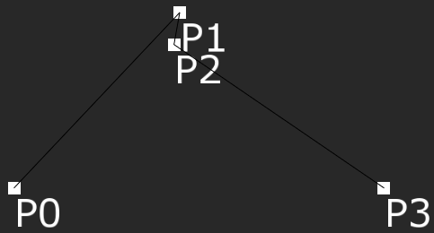

LevelPath
A LevelPath is a component that is used to create spline paths that any game object can be made to follow. The Path can be created manually in the Editor, or ControlPoints can be added at runtime.
Common Uses
- Creating a patrol route for enemies to follow
- Creating a camera path for an on-rails game
Using a LevelPath
LevelPath is a component that can be added to any Cog so long as it also has the Transform component attached. Once attached, the object has access to several options to start creating a Path.
The properties of the LevelPath will effect the Path in various ways. All of the properties can be modified both in editor as well as at runtime.
Closed: This will determine whether or not the Path loops in on itself.DebugDraw: If this is turned off then the current Path will not be shown either in editor or at runtime. Note that even if DebugDraw is turned off the control points may still be viewable.Error: Determines how far a line segment is allowed to deviate from the curve. A higher error will create a more pointed curve, especially if the Path has tight bends.CurveType: The CurveType determines how the control points will effect the curve of the Path. There are three different CurveTypes, each with their own benefits and drawbacks.Linear: A linear path will simply be drawn in a straight line from one control point to the next. The Path will always hit each control point, but it will also only have sharp corners rather than a smooth curve.BSpline: A BSpline will create a smooth curve throughout the Path, however it will not go directly through each of the control points. As such it may not be always be drawn as expected.CatmulRom: CatmulRom Paths will go through each control point, but it is also possible for the Path to loop and intersect itself if the control points are too close to each other.
Below is an example of each CurveType, each using the same control points in the same positions.
 Linear CurveType
BSpline CurveType
CatmulRom CurveType
DisplayProxyControlPoints: This determines whether or not the control points used to modify the Path in editor are shown. Note that if they are turned off, the Path itself may still be viewable. However if they are turned off then they will no longer move if their parent object (the Cog with the LevelPath component attached) is moved, and as the Path itself is derived from their position the Path will not move as well.
Creating a Path
A Path can be created either in the Zero Editor or at runtime from a ZilchScript. Which method is a better choice is typically dependent on the manner of gameplay; if the direction the object will be taking is known it’s generally better to make the Path in editor so that the it can be hand crafted, however if the direction is unknown it will need to be created at runtime. It’s also possible to use a mix of both: a number of different Paths can be created ahead of time and the player may choose which direction to travel, at which point smaller Paths can be made to join the currently traveled Path with the next the player has chosen.
Using the Editor
In order to make a Path using the editor, simply click on AddPoint in the LevelPath properties. Each time the button is pressed it will create a new control point a short distance away from the previous control point along the current vector the path is pointed in. The control points can then be moved in order to manipulate the shape of the path.
If any control points are deleted, the path will be recalculated and redrawn with the remaining points.
In a ZilchScript
To create a Path at runtime, there are two options. The LevelPath.AddPoint() function can be used, which acts in the same manner as clicking on the AddPoint button in the properties window, however because of that it’s somewhat inefficient: after making the control point, it would then be necessary to get a reference to that control point in order to move it into the correct position. It will also always be made with the control point being shown. The better option is to use LevelPath.Path.AddControlPoint with takes a Real3 and creates a control point at that location.
class PathMaker : ZilchComponent
{
// This class will create a Path in a Sine wave
// Make sure that the object has the LevelPath Component
[Dependency]
var LevelPath : LevelPath;
// The Amplitude of the wave
[Property]
var Amplitude : Real = 1;
// How many times it cycles through the wave
[Property]
var MaxCycles : Integer = 1;
// The Period of the wave
[Property]
var Period : Real = 1;
// Variable to be used to keep a reference to the Path
var MyPath : Path;
// the current point in the Sine wave
var CurrentPoint : Real;
// How many points have been made
var Point : Integer;
function Initialize(init : CogInitializer)
{
// Save the reference of the Path of the LevelPath
this.MyPath = this.LevelPath.Path;
// Check to make sure at least one cycle is being made
if (this.MaxCycles <= 0)
this.MaxCycles = 1;
// Make sure that the Period is not zero
if (this.Period == 0)
this.Period = 1;
Zero.Connect(this.Space, Events.LogicUpdate, this.OnLogicUpdate);
}
function OnLogicUpdate(event : UpdateEvent)
{
// There needs to be 5 made in the first cycle, however there only
// needs to be 4 points in each cycle after the first. Therefore
// there needs to be one less point made for each cycle after the first
if ((this.Point+(this.MaxCycles - 1)) < (this.MaxCycles * 5))
{
// Find the Y location based on the Sine wave equation
var yLoc = this.Amplitude *
Math.Sin((Math.Pi/2*(1/(this.Period)))*this.CurrentPoint);
// Create a new control point at:
// The current X location of the Sine wave
// The Y location determined by the Sine equation
// And offset by the position of the object with the LevelPath component
this.MyPath.AddControlPoint(Real3(this.CurrentPoint, yLoc, 0)
+ this.Owner.Transform.Translation);
// Update the X location
this.CurrentPoint += this.Period;
// Update how many points have been made
this.Point += 1;
}
else
{
// Since all points have been made, LogicUpdate is no longer needed
Zero.Disconnect(this.Space, Events.LogicUpdate, this);
}
}
}
Following a Path
Once a Path has been made, LevelPath.Path.SampleDistance().WorldPoint can be used to get a Real3 of the location of the Path at a specific distance from the start. By using that function in LogicUpdate the location of an object can be repeatedly updated to the next point on the line.
With some updates to the previous script and by creating a new script, they can be used to create an enemy that follows the wave when it gets created.
class CreatePathMaker : ZilchComponent
{
// An archetype that needs to have both the
// LevelPath component and the PathMaker script
[Property]
var PathMaker : Archetype;
// How fast to move along the Path
[Property]
var MoveSpeed : Real = 1;
// The specific object that made the Path
var PathMakerCog : Cog = null;
// A reference to the Path to be followed
var MyPath : Path;
// A timer to determine the time on the Path
var TimePassed : Real;
function Initialize(init : CogInitializer)
{
// Check that a PathMaker archetype was assigned
if (this.PathMaker != null)
{
// Create the PathMaker at the same position as this object
// and save a reference to the created object
this.PathMakerCog =
this.Space.CreateAtPosition(this.PathMaker,
this.Owner.Transform.Translation);
// Create a new instance of a custom event that's defined below
var pathRequest = new RequestPathMaker();
// Information to be sent with the event
pathRequest.Maker = this.Owner;
pathRequest.MaxCycles = 3;
// Make sure that the created object has the LevelPath component
if (this.PathMakerCog.LevelPath != null)
{
// Dispatch the custom event to the object
this.PathMakerCog.DispatchEvent(Events.RequestPathMaker,
pathRequest);
// Save a reference to the Path to be followed
this.MyPath = this.PathMakerCog.LevelPath.Path;
}
}
}
// A function that will be called when the Path has finished being made
function Start()
{
Zero.Connect(this.Space, Events.LogicUpdate, this.OnLogicUpdate);
}
function OnLogicUpdate(event : UpdateEvent)
{
// Keep track of how much time has passed
this.TimePassed += event.Dt;
// Set the objects position along the Path
this.Owner.Transform.Translation =
this.MyPath.SampleDistance(this.TimePassed *
this.MoveSpeed).WorldPoint;
// If the object reaches the end of the Path
// and the Path is not closed in a loop
if (this.TimePassed * this.MoveSpeed
> this.MyPath.TotalDistance
&& !this.MyPath.Closed)
{
// Destroy both the object and the PathMaker
this.PathMakerCog.Destroy();
this.Owner.Destroy();
}
}
}
// The event to send to give information to the PathMaker object
class RequestPathMaker : ZilchEvent
{
sends RequestPathMaker : RequestPathMaker;
// A reference to the object that will be following the Path
var Maker : Cog;
// The information for the Sine wave
// Defaults to one to make sure usable information is passed
var Amplitude : Real = 1;
var MaxCycles : Integer = 1;
var Period : Real = 1;
}
The CreatePathMaker script will need to be attached to the object that will follow the Path, then some changes will have to be made to the previous PathMaker script. First the connection to LogicUpdate should be changed to connect to the new RequestPathMaker event, and the checks on this.MaxCycles and this.Period should be moved from the initialize function into the function that event calls.
// Reference to the object that will be following the Path
var MyMaker : Cog;
function Initialize(init : CogInitializer)
{
// Save the reference of the Path of the LevelPath
this.MyPath = this.LevelPath.Path;
// Listen for a RequestPathMaker event
Zero.Connect(this.Owner, Events.RequestPathMaker, this.MakePath);
}
function MakePath (event : RequestPathMaker)
{
// Save a reference of object that follows the Path
this.MyMaker = event.Maker;
// Set the Amplitude, Period and MaxCycles of the wave
// Check that it's making at least one cycle
// and the Period is not zero
this.Amplitude = event.Amplitude;
this.MaxCycles = event.MaxCycles;
if (this.MaxCycles <= 0)
this.MaxCycles = 1;
this.Period = event.Period;
if (this.Period == 0)
this.Period = 1;
// Connect to LogicUpdate here
Zero.Connect(this.Space, Events.LogicUpdate, this.OnLogicUpdate);
}
A new line will also have to be added to the else condition in LogicUpdate.
...
else
{
// call the Start() function to have the object follow the Path
this.MyMaker.CreatePathMaker.Start();
// Since all points have been made, LogicUpdate is no longer needed
Zero.Disconnect(this.Space, Events.LogicUpdate, this);
}
Once the archetypes have been created and assigned, whenever the moving object is created it will create the PathMaker object and send it an event will any information needed for setting the parameters of the sine wave. The PathMaker will then create the Path and, once the Path is finished, call the function on the moving object to connect to LogicUpdate to begin moving.